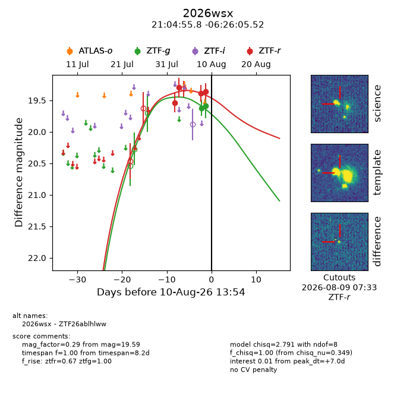
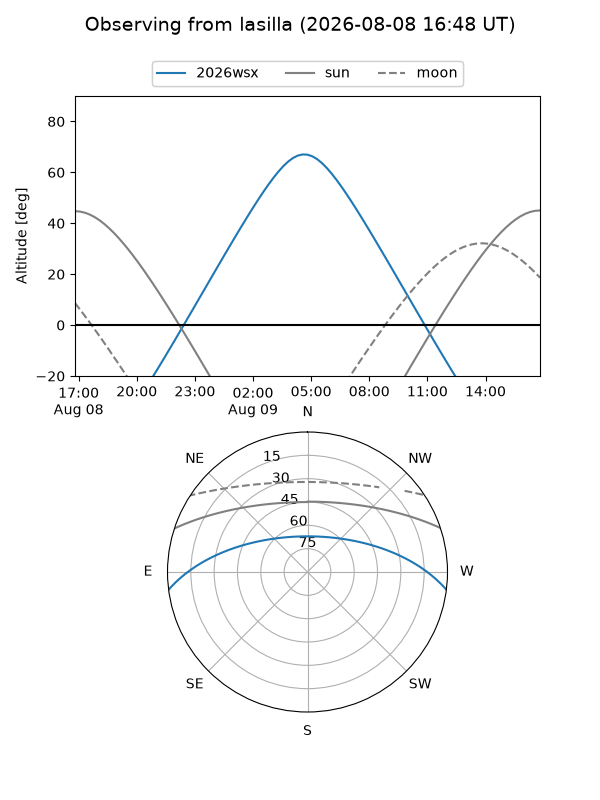
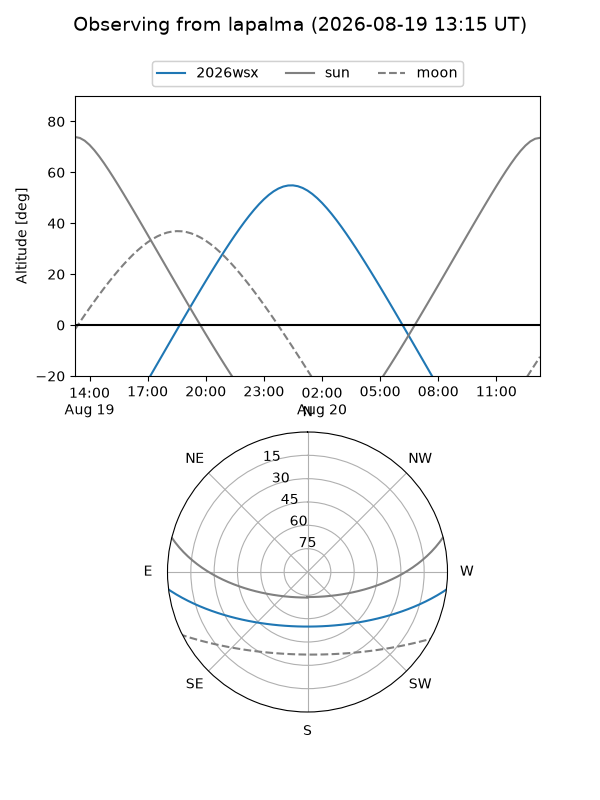
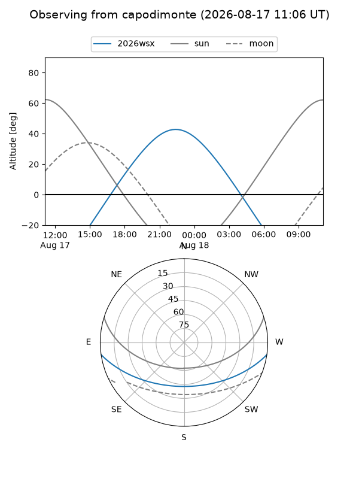
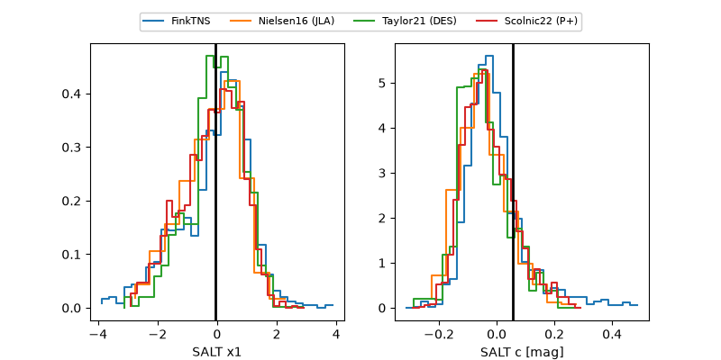

2026wsx
Target 2026wsx at 2026-08-10 13:57
Aliases and brokers:
FINK-ZTF: ztf.fink-portal.org/ZTF26ablhlww
Lasair-ZTF: lasair-ztf.lsst.ac.uk/objects/ZTF26ablhlww
ALeRCE-ZTF: alerce.online/object/ZTF26ablhlww
YSE-PZ: ziggy.ucolick.org/yse/transient_detail/2026wsx
TNS name: wis-tns.org/object/2026wsx
Direct TNS query: direct search
alt names
ZTF26ablhlww (ztf,fink_ztf)
2026wsx (tns,yse)
Coordinates:
equatorial (ra, dec) = 316.2326,-6.43487
equatorial (HMS+DMS) = 21:04:55.81,-06:26:05.52
galactic (l, b) = (43.1449,-32.51984)
Flags:
TNS type: nan
peak dt: +7.0
Photometry:
last ztfg=19.59, ztfr=19.36
2 ztfg, 4 ztfr detections
Lightcurve

Visibility



Additional plots
